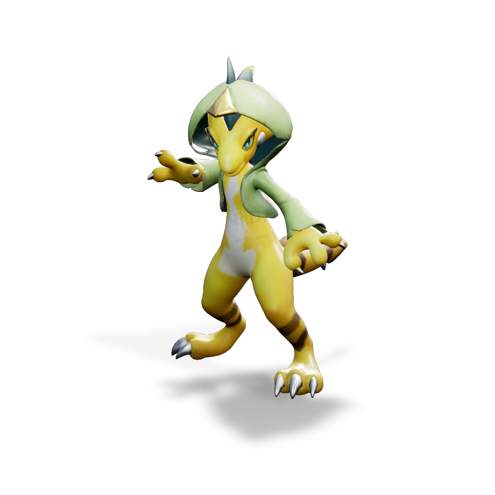

รายชื่อ Aniimo › #10002

กิ้งก่าขาแดนซ์ (Dazmand)
#10002ธาตุสายฟ้าNovaSupport
มีแขนขายืดหยุ่นและชอบโชว์ท่าเตะหวือหวาให้ใครก็ตามที่ดูอยู่ ใช้คราบที่ลอกออกมาคลุมหัวเหมือนฮู้ดเท่ ๆ
ดูรายละเอียดเต็ม ร่างพิเศษ และร่างเปล่งประกายค่าสถานะพื้นฐาน
| HP | 100 |
|---|---|
| ATK | 108 |
| P.DEF | 81 |
| M.DEF | 90 |
| REGEN | 88 |
| BREAK | 55 |
สกิล
| โจมตีปกติ | ATK สายฟ้า ใช้พลังสายฟ้าโจมตีเป้าหมายระยะประชิด |
| สกิล 1 | Thunder Sweep สายฟ้า เตะหมุนตัวอย่างรวดเร็ว ทำดาเมจเป็นพื้นที่และดึงเป้าหมายรอบข้างมาด้านหน้า เพิ่มอัตราคริติคอลของดาเมจสายฟ้าให้ทั้งทีม 20% (+1.9% ต่อ ATK 100 สูงสุด 35%) เป็นเวลา 20 วินาที |
| สกิล 2 | Electricity Shock สายฟ้า ม้วนตัวเป็นลูกบอลพุ่งใส่เป้าหมาย ทำดาเมจและติด Lightning Debuff 5 สแต็ก ถ้าหลังโดนเป้าหมายมี Lightning Debuff มากกว่า 5 สแต็ก จะติด [Paralysis] 5 วินาที |
| สกิล 3 | Lightning Break สายฟ้า โจมตีเป้าหมายด้วยท่าเบรกแดนซ์ |
| อัลติเมต | Lightning Storm สายฟ้า หมุนกลับหัวด้วยความเร็วสูง สร้างพายุสายฟ้าขนาดใหญ่ ระหว่างสกิลทำดาเมจเป้าหมายในระยะ 12 ครั้ง แต่ละครั้งติด [Lightning Debuff] 1 สแต็ก เคลื่อนที่ได้ขณะร่าย |
สายวิวัฒนาการ
- กิ้งก่าเปลือกไข่ → กิ้งก่าขาแดนซ์ (Aniimo เลเวล 25, ทำเควสต์ที่เกี่ยวข้องในอีเวนต์ Aniimo Discovery ให้สำเร็จ)
Held Item ที่แนะนำ
- Spirited Feather Aniimo ที่สวมใส่ได้ REGEN เพิ่ม 0.7 ต่อเลเวล
- Auspicious Bell เมื่อใช้สกิล มีโอกาส 20% ได้รับ 5 EP
งานใน Homeland
งานธาตุสายฟ้า Lv.3, งานช่าง Lv.3